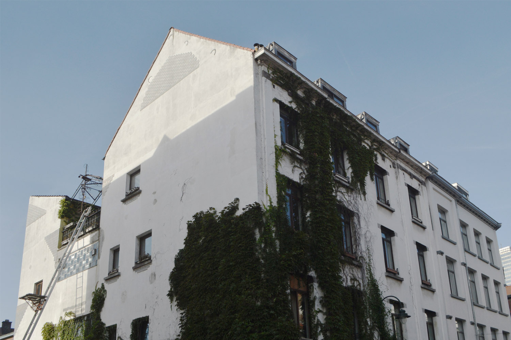

ABOUT HECTOLITRE
Hectolitre is an art-space dedicated to artists and cultural workers who wish to delve deeper into their projects, experiment with transdisciplinarity and connect their art form/research to the neighborhood. This is a living residency meaning that artist apply for living and working space at HECTOLITRE. They are taking part in the project's community rings, together with involved neighbors, socio-cultural activists, local and international artists/curators.
Hectolitre is also an unusual building in the heart of the Marolles neighborhood undergoing a radical change of identity. Former swingers club, then storage for antiques, the space is filled with peculiar Art Brut interventions, resembling a kind of «memory forest». The visually and symbolically complex surrounding is not perceived as an obstacle, but rather as a living system who accepts, associates, questions and experiences. Hectolitre hosts exhibitions, performances, musical encounters, film projections, debates and other initiatives; the complementarity among its artists, curators, creatives and neighbors inhabits the place and catalyzes exchange.
ABOUT THE RESIDENCY
The residency is an opportunity to work in a hybrid art space, prototype, experiment, reflect and interact with professional community, city, peculiar memory of the space, and beyond.
Hectolitre has several residency units for living & working, which are all supported by common spaces for practice and tryouts.
The residencies are three to six months-long. The programme is dedicated to research artists, curators, writers, critics and thinkers.
CANDIDATE’S PROFILE
- There is no specific medium or discipline, but writing, audio/video, visual arts, transmedia or performance-based works.
- There is no subject or method preference, but portfolios rendering contextual and participatory reflection, as well as a research approach, will have advantages.
- The residency is open to people from all over the world.
STUDIO INFORMATION
Each resident is assigned a private working space, which depends on the private residency unit and type of the activities performed. Aside from that, common working spaces are located throughout the building, being accessible via a shared calendar. Those are Trait d’Union (open community and workshop space at ground-level), Reactor (rehearsal and tryout space), Edit room (shared video and sound station), Other room (multifunctional spaces with podcast setup), Shared atelier (for drawing, painting, experimenting)and Meeting room.
ACCOMMODATION INFORMATION
There are two options for nighttime accommodation:
- Two “HouseAteliers” on the 1st and 2nd floor (2 SPOTS AVAILABLE) These are 110m2 private units with two private rooms in each unit and a private working area for two residents to share. Both units have all private kitchens, bathrooms and toilets and are equipped with basic everyday life furniture (beds, washing machines, refrigerators, cookers, cutlery, etc.)
- Two big rooms and one small room on the 4th floor (3 SPOTS AVAILABLE). These three rooms share one private bathroom and toilet on the fourth floor, while the kitchen is situated on the 3rd floor, alongside open working space, meeting rooms, edit room and quite a crazy terrace.
There is also a bike local with one shared bike.
TECHNICAL INFORMATION
An atypical building with venues adaptable to shared studios, exhibitions, performing arts, encounters, presentations, screenings, co-working. The project’s audio-video equipment and material is available for use (projectors, sound system, podcast system, power tools, etc.)
All residents become members of Hectolitre ASBL (NGO) and take part in programming and evaluating new applications. The community meets once a month for a “Serious Apero” to eat and share the individual projects with others.
LOCATION
The project’s space is located in Les Marolles, a Brussels central district with proximity to the cult flea market on the Place Jeu de Balle. The train station Bruxelles South is a 7 min walking distance.
OUTCOME
The research should be an independent and site-specific initiative, adjusted for a 3 to 6 months residency. The outcome is free of specific form, and depending on the type of work and activities undertaken, it can come through an exhibition, talk, performance, installation, screening, podcast, or web-publication.
PAID BY HOST
HECTOLITRE covers the costs of shared working spaces, communication, networking, coordination and project and building management. HECTOLITRE has no budget allocated for production, but will assist with available material and help will come from the professional community working and living in-situ.
PAID BY ARTIST
Residents provide the private accommodation costs, which is 200 Euro/month for the small private room on the 4th floor, 400 Euro/month for the big private room on the 4th floor, and 500 Euro/month for the room in HouseAteliers on the 1st and 2nd floor. HECTOLITRE provides an invitation letter, but cannot search for external residency funding.
HOW TO APPLY
In order to answer the open call, please prepare the following info/documents, and email to residence@hectolitre.space with the subject: “Residence of Reflection”:
- Portfolio ( visual or writing; .pdf or the URL) maximum 10 pages
- CV maximum 2 pages (pdf or the URL)
- Residency intention (few words about your needs and type of work) maximum 1 page
- Space + Time period (specify SMALL or BIG ROOM or HOUSE ATELIER + period you apply for, the duration of the stay). Please be aware that you can apply to minimum of 2 months and maximum of 6.
AVAILABILITY
HOUSE ATELIER- OPEN- (500eur per month per person, for 2 people all in total 1000eur per month) on the 1st floor
This is 110m2 private unit with two private rooms in each unit and a private working area for two residents to share. The unit has a private kitchen, bathroom, and toilet and it is equipped with basic everyday life furniture (beds, washing machines, refrigerators, cookers, cutlery, etc.)
The call is opened for individual applications or for a duo.
Duration: 6 months
Available from 1st of December 2025 until 31st of May 2026
SMALL ROOM-OPEN- (200eur per month, for 1 person)on the 3rd floor
This is a small unit about 30m2, furnished with a bed, desk, closet, chair. Other communal spaces like kitchen, bathroom, toilet, working spaces, livingroom and teracce are shared with 2 other artists living and working on the 3rd floor.
Duration: 3-6 months
Available from 1st of December 2025 until 31st of May 2026
2 BIG ROOMS-OPEN- (400eur per month) on the 3rd floor
These are 2 big units about 50m2, furnished with a bed, desk, closet, chair.It has it's own terrace and fire place. Other communal spaces like kitchen, bathroom, toilet, working spaces, livingroom and teracce are shared with 2 other artists living and working on the 3rd floor.
Duration: 3-6 months
Available from 1st of December 2025 until 31st of May 2026
DEADLINE
19th of October